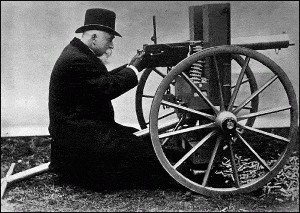

< < < Back
The Benefits Of Machine Gun Versus Sniper Rifle Game – Return Of Kings
Today we discuss the advantages and disadvantages of what you may have seen referred to as the “machine gun” approach; aiming at multiple female targets with indiscretion and scoring with whatever you hit. This is opposed to the more concentrated “sniper rifle” approach, where you concentrate your efforts on a few select targets.
Now, perhaps a first reaction would be to look at the above and immediately think “I want as much pussy as possible, so I will adopt the machine gun approach.” I can understand this—if you’re reading this and other manosphere sites, one of your primary motivators is likely wanting to sample as much as you can.

Machine Gunning
Firstly, remember the machine gun approach should not be confused with the abundance mentality. As an overarching principle, you should be intolerant of time wasters; there’s simply too many women out there. Initially, you should be breaking ice with everyone you have interest in. The advantages of the machine gun principle is you are diversifying your risk of failure, and so increasing your chances of conversion, through numbers alone. If this works while you’re on-form, you’re potentially going to experience jackpot weeks, such as when I slept with seven different women in six days.
Now, downsides. Irrespective of what others may say, you’re going to have to put time into this approach. Unless you’re a hypnotist, the truth is getting a woman to sleep with you who you also want to sleep with is going to require some time investment. You’re going to have to organize yourself and have good consistent excuses when they start bleating on about wanting to spend more time with you.
The stronger the competition in your chosen arena (online or not, demographic of region of operation and so on), the tighter your game is going to have to be. In reality, this means organization of time, understanding of progress with each woman and not becoming blasé about it, regardless of levels of success. It is a time and effort-intensive approach. If you’re trying to do more with your life aside from the minimum needed to sustain your existence (go to work and little more), the opportunity cost will be substantial.
Putting In The Hours
I mentioned becoming blasé. A level of success with this approach can affect your enthusiasm for sex. “Yeah whatever,” I hear you say. Trust me; I have testosterone and health levels significantly in excess of the average thirty-four year old and still, this shit can get old quick. Sustainability to keep onboard quality women is of note; regardless of what others in the manosphere might say you can’t simply ignore women who message you.
Maintaining a quality harem of hot women who know how to fuck, alongside the machine gun approach, is fucking hard work even for a man in his prime, particularly when other shit is starting to go down. You’re inevitably going to have to make cuts at some point or another, as days come by where you think “fuck this.” Even if you don’t get to this point, your game can become diluted; where you’re expending so much energy among many, the end results may not be good. We only have limited personal resources.
Anyone who reads my blog will know I’m not entirely honest with women; I treat people how they treat me and women utilize omission of information more than anything else. Hence, I do exactly the same and that’s how I get the women I want; because the majority of quality women need at least a hope, the possibility of a fairy tale ending might be there in order for them to go further and stick around if you want some regular action.
Sniper Game
The sniper game also has it’s advantages and disadvantages. On one hand, you can again begin with some scattergun ice breaking; taking aim at anyone who takes your fancy. But the difference here is, you isolate quickly the ones you believe are going to yield results, discard the time wasters, and concentrate on building a high-quality harem of two to three women, which will be easier to maintain over an approximate three to nine month period (as desired of course). This way, you’ll have more understanding on their part, more flexibility and less demands on their part. Frankly, this approach is going to yield you better quality and more regular sex, as the women are likely to engage emotionally with you, and so yield to your desires.
The most prominent downside to this approach is the misfire. Even the most experienced of us have been drawn into a girl and started going through the sequence, only to get blown out at some point. I’ve done it. Lots of the biggest self-deemed “players” do, you just don’t hear much about it. The only thing you can do is learn from it and refine your approach in the future.
Other disadvantages come mainly from when the harem is established. While you’ll likely change the composition of it in the time frame above, someone along the line is going to get inside your head at some point or another, and you may feel some attachment growing. That’s when you’re going to have to take control again, of yourself and the situation. Even the most hardened male is going to experience that sooner or later, and frankly if it escalates the best thing is to make a quick kill and deal with the situation immediately. It’s either that or you’re going to end up in a de-facto relationship.
More likely, she’ll get emotionally involved with you. While there is a need to maintain an ember of hope for a woman there could be something more (particularly with women over thirty), overall this needs to be tightly controlled. The best way I’ve found to deal with this personally is regardless of what you want, to set out strong boundaries and expectations as a man in the early stages. However even with this, in my experience this is basically inevitable. The vast majority of women are going to want to feel things are “progressing” in their minds, as the biological clock begins to tick down.
The ages between thirty and forty are going to determine the average amount of time before these demands become apparent, as they approach the point of barren spinsterhood. You may have experienced this yourself with women practically demanding a relationship on the first or second meeting. Don’t even waste your time with these dickheads – anyone with an ounce of sense would understand relationships develop naturally when they are of beneficial worth to both parties.
Conclusion
Personally, I’ve recently noted spreading myself too thinly and expecting too quick results (from having a string of previous successes with the same approach) has resulted in a much lower conversion rate than I’m happy with. The net result of all the above is a lower tolerance for time wasters and so more deletion, as well as a desire to spend time on higher quality women. These women certainly require more investment.
As for yourself, I would suggest you evaluate what you really want to achieve in life. While a lot of people do certain things which seem to be driven by the desire for pussy, you should really concentrate on what you feel you need. While we always hear a load of information about building a career, family, and so on, this is essentially control propaganda. However, there is some truth in that you do need a good form of income to do things you find satisfying, to do things that will improve your life and also to experience the relations you need at this point of your life.
Much in the same way I’ve never owned a car and only rented, fucking a whole bunch of different women opened my eyes and aided my transition from Jaded to Unjaded, as I realized how many different types of personalities, bodies, and experiences there were out there to be had. With that knowledge, should I ever decide to choose one for the long term, I will have an exact idea about what I want. Life is there to be experienced. If you’re not sure what you want, I would generally advise you to have a little taste of everything until you do.
Read Next: Don’t Ever Take Advice From A Dating Website


{kind=link}
{kind=link}